POP-UP EXPERIENCE / O2O JOURNEY
게임에서 느끼는 감정을 4개의 현장 미션과 모바일 감정 리포트로 확장했습니다.
4감정 몰입형 체험존
4주현장 운영 기간
O2O모바일 스탬프 투어
기간2025.04 – 2025.06
프로젝트발로란트 5주년 팝업
담당체험 미션 · 모바일 UX/UI · 디지털 장치 연동 · 운영 매뉴얼
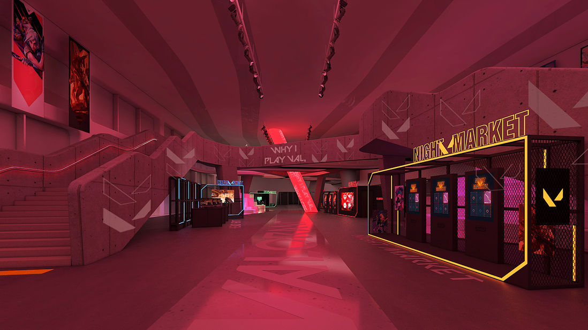
게임에서 느끼는 감정을 현장 미션으로 체험하고, 모바일 감정 리포트로 기록하도록 설계했습니다.
발로란트 출시 5주년을 기념해 게임에서 느끼는 긴박함, 쾌감, 몰입, 설렘을 4개의 현장 미션으로 재구성했습니다. 팬은 각 미션에 참여한 뒤 모바일 스탬프로 완료 현황을 확인하고, 체험 과정에서 느낀 감정을 모바일 감정 리포트로 작성합니다. QR 인증부터 미션 참여, 감정 리포트와 만족도 조사, 리워드 수령까지 이어지는 전체 참여 여정을 설계했습니다.
서로 다른 장치와 미션을 하나의 참여 흐름으로 연결하고, 4주간 안정적으로 운영해야 했습니다.
체크인부터 현장 미션, 감정 기록, 리워드까지 하나의 참여 여정으로 연결했습니다.
모바일 스탬프 투어를 중심으로 체험 완료 현황과 다음 미션을 안내했습니다. 원탭과 야시장 체험에는 모바일로 발급한 PIN 인증을 적용하고, 체험 후에는 감정 리포트 작성과 만족도 조사, 리워드 수령으로 이어지도록 구성했습니다.
01체크인 후 모바일 스탬프 투어 시작
024개 체험존에서 미션 수행과 결과 확인
03모바일 스탬프로 체험 완료 현황 확인
04체험 중 느낀 감정 리포트 작성과 만족도 조사 참여
05리워드 수령 후 치어풀 이벤트 선택 참여
디에이블크리에이티브와 체험 방향을 협의하고 모바일·장치 구현과 현장 운영을 위한 매뉴얼 및 지원 기준을 마련했습니다.
라이엇 게임즈 팝업의 체험 방향과 참여 목표, 운영 요구사항 전달 및 협의
운영 매뉴얼에 따라 체험 안내, 완료 확인, 리워드 지급 수행
- 체험 여정 설계게임 감정을 반영한 4개 현장 미션과 전체 참여 여정 설계
- 모바일 UX/UIQR 인증, 스탬프 투어, 감정 리포트, 만족도 조사, 리워드 화면 기획
- 장치 연동 요구사항모바일·키오스크·태블릿·밴딩머신 장치별 화면 흐름과 연동 요구사항 기획
- 운영 매뉴얼·지원체험별 인증, 완료 확인, 리워드 지급 절차와 예외 대응 매뉴얼화
역할 범위: 게임에서 느끼는 감정을 4개의 현장 미션으로 재구성하고, 모바일 인증부터 스탬프 투어·감정 리포트·리워드로 이어지는 UX/UI를 기획했습니다. 장치별 구현 및 연동 조건을 협의하고, 확정된 운영 절차를 매뉴얼화해 현장에 전달하며 4주간의 운영을 지원했습니다.
게임에서 느끼는 감정을 서로 다른 방식의 현장 미션으로 재구성했습니다.
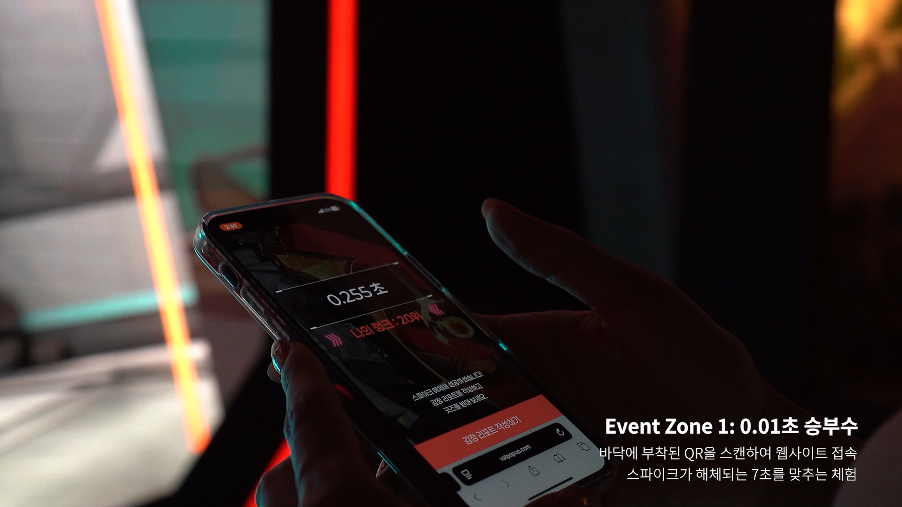
경험 01 · 긴박함·쫄깃함
0.01초 승부수
모바일에서 제한 시간 안에 스파이크를 해제하는 타이밍 미션을 진행하고, 참여 기록과 순위가 현장 키오스크 랭킹보드에 표출되도록 구성했습니다. 게임 플레이에서 느끼는 긴박함과 쫄깃함을 현장 경쟁 경험으로 확장했습니다.
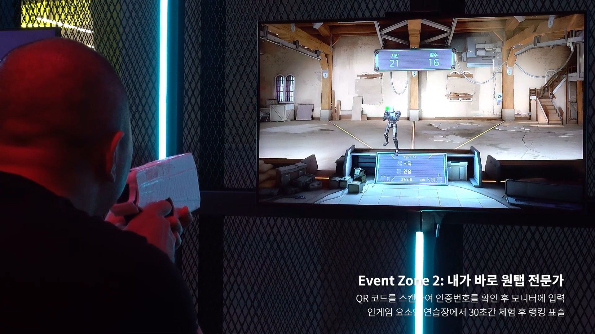
경험 02 · 쾌감·희열
내가 바로 원탭 전문가
현장 화면의 QR을 스캔하면 모바일에 PIN이 표시되고, 해당 PIN을 총으로 입력해 체험을 시작하도록 구성했습니다. 이후 화면 속 표적을 조준하고 명중 결과를 확인하며 원탭 플레이의 쾌감과 희열을 실제 조작 경험으로 재현했습니다.
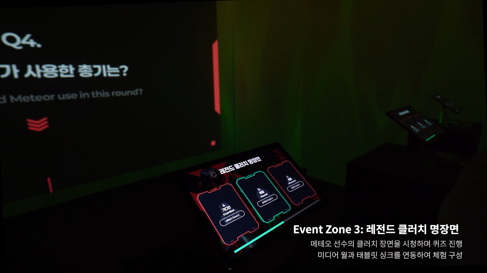
경험 03 · 긴장·몰입
레전드 클러치 명장면
미디어월에서 발로란트의 클러치 명장면을 감상한 뒤 태블릿으로 퀴즈에 참여하도록 구성했습니다. 영상 시청과 문제 풀이를 연결해 명장면의 긴장과 몰입을 현장에서 다시 경험하도록 설계했습니다.
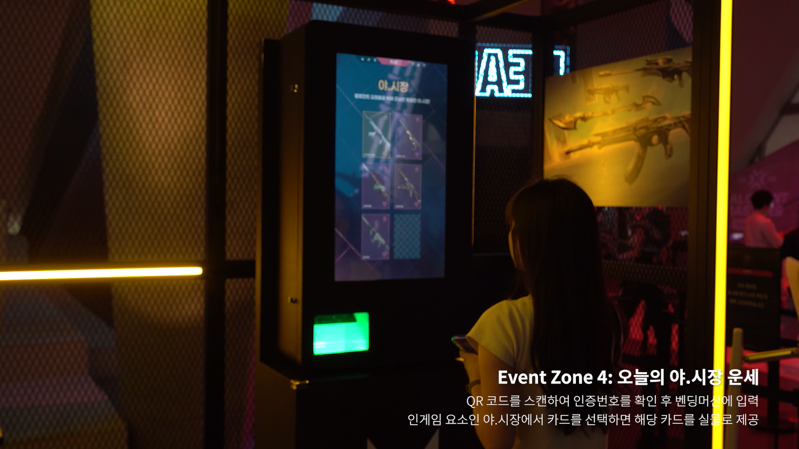
경험 04 · 설렘·행운
오늘의 야.시장 운세
야시장 체험 화면의 QR을 스캔하면 모바일에 PIN이 표시되고, 키오스크에 PIN을 입력해 인증한 뒤 카드를 선택하고 밴딩머신에서 리워드를 수령하도록 설계했습니다
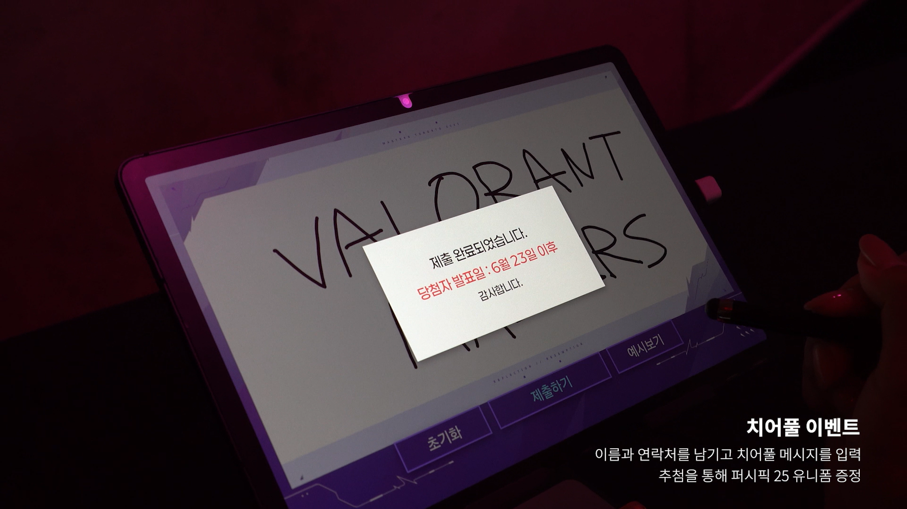
경험 05 · 추가 이벤트
치어풀 이벤트
이름과 연락처, 응원 메시지를 입력해 추첨에 참여하는 별도 이벤트를 기획했습니다. 4개 핵심 미션 완료 이후에도 팬이 메시지를 남기며 팝업에 추가로 참여하도록 구성했습니다.
개별 미션보다 팬이 체험하고 기록한 감정이 하나의 여정으로 남도록 설계했습니다.
게임에서 느끼는 서로 다른 감정을 체험 방식과 보상 구조에 반영했습니다.
타이밍 미션에는 긴박함을, 사격에는 쾌감을, 명장면 퀴즈에는 몰입을, 야시장 리워드에는 설렘과 행운을 연결했습니다. 게임의 감정을 각 체험의 행동과 결과로 구체화했습니다.
모바일로 체험 완료 현황을 확인하고 다음 참여를 이어가도록 설계했습니다.
모바일에서 체험 완료 현황과 다음 미션을 확인하고, 감정 리포트 작성과 만족도 조사, 리워드 수령까지 이어지도록 구성했습니다. 체험 장치는 달라도 참여자가 하나의 여정으로 이해할 수 있도록 모바일 화면의 역할을 통일했습니다.
운영 오류를 쉽게 인지하고 대응할 수 있도록 처리 기준을 설계했습니다.
인증, 체험 완료, 장치 작동, 리워드 지급 과정에서 발생할 수 있는 오류 상황을 구분하고, 스태프가 증상을 통해 현재 상태를 판단할 수 있도록 확인 항목과 처리 방법을 운영 매뉴얼로 정리했습니다.
모바일 참여 여정과 체험 장치별 구현 방식을 기획 산출물로 구체화했습니다.
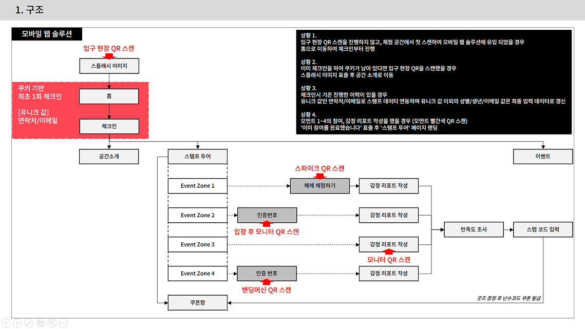
QR 인증부터 스탬프 투어, 감정 리포트, 만족도 조사, 리워드까지의 모바일 서비스 구조
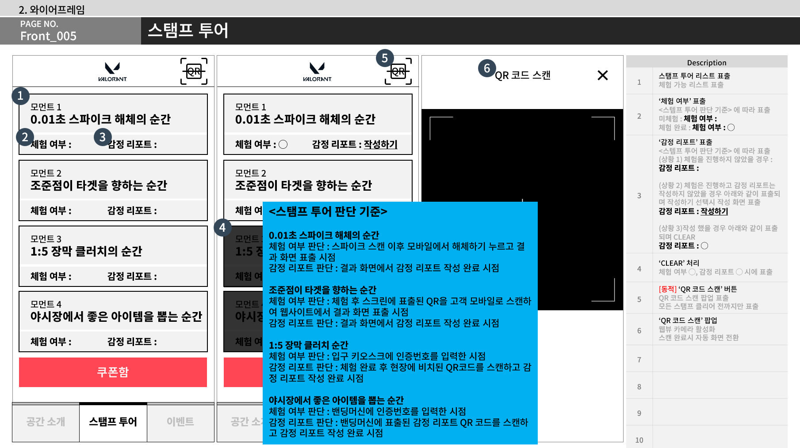
체험 완료 현황과 다음 미션, 감정 리포트 작성 흐름을 구성한 스탬프 투어 화면 설계
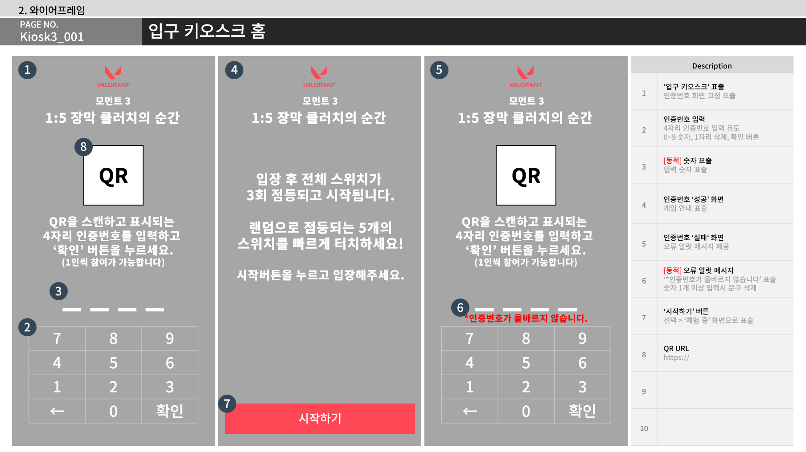
QR 스캔 후 모바일로 인증번호를 발송하는 야시장 체험 화면 설계
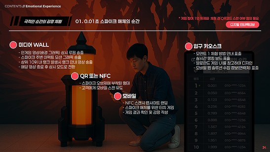
모바일 스파이크 해제 미션과 키오스크 랭킹보드 연동을 정리한 기획안
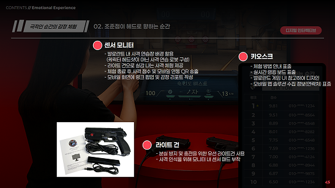
사격 장치·모니터·키오스크의 참여 연동을 정리한 기획안
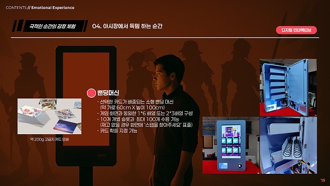
카드 선택 결과를 밴딩 리워드로 연결한 야시장 체험 기획안
게임의 감정을 현장 미션으로 체험하고 모바일로 기록하는 참여 여정을 구축했습니다.
4개 체험존을 QR 인증과 모바일 스탬프 투어로 연결한 참여 구축
긴박함·쾌감·몰입·설렘을 타이밍·사격·퀴즈·리워드 미션으로 재구성
체험 완료 현황, 감정 리포트 작성, 만족도 조사, 리워드 수령을 잇는 모바일 UX/UI 기획
4주간 반복 운영을 위한 장치별 연동 조건과 현장 운영 절차 정리